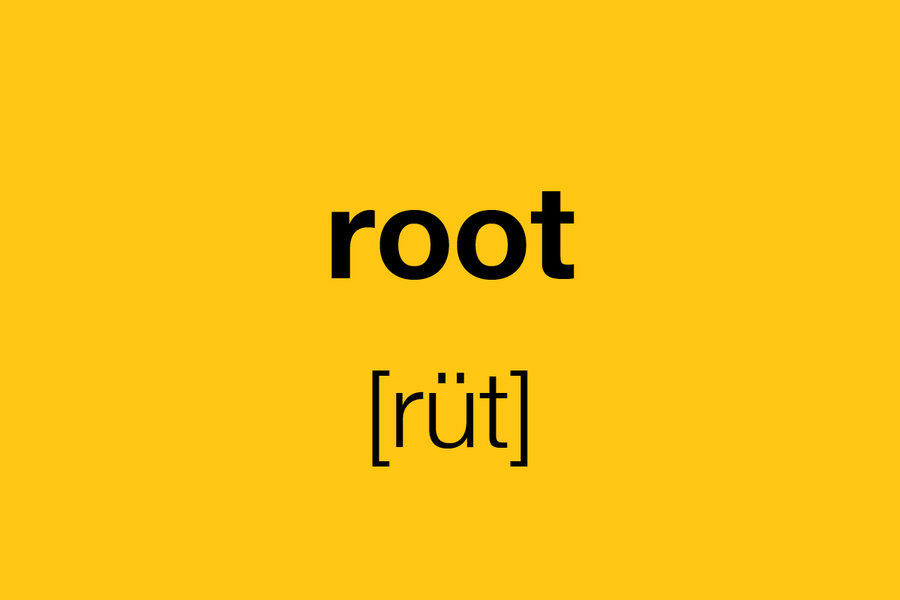

In the following example, the file path points to a file in the image located at the root of the current web
In the following example, the file path points to a file in the images folder located in the folder one level up from the current folder
And, how to display root/images/images/quiz.jpeg